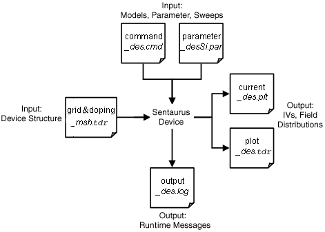

main menu
| module menu
| << previous section
| next section >>
main menu
| module menu
| << previous section
| next section >>
Sentaurus Device
1. Basics
1.1 Overview
1.2 Command File
1.3 Parameter File
Objectives
- To become familiar with the capabilities of Sentaurus Device.
- To introduce the structure of input files that Sentaurus Device uses.
1.1 Overview
Sentaurus Device is a numeric semiconductor device simulator, capable of simulating the electrical, thermal, and optical characteristics of various semiconductor devices.
It simulates 1D, 2D, and 3D device behavior over a wide range of operating conditions, including mixed-mode circuit simulation, combining numerically simulated devices with their compact modeling, which is performed on a SPICE-based circuit simulation level.
1.2 Command File
A typical command file of Sentaurus Device consists of several sections (or statement blocks), with each section executing a relatively independent function. The default extension of the command file is _des.cmd, for example, pp1_des.cmd.
Keywords used in the command file are case insensitive, and most can be abbreviated. However, external references such as file names and contact names (which refer to the contact definitions in the device structure file) are case sensitive and must be enclosed in double quotation marks.
The command file typically contains the following sections:
- Section 1.2.1 File Section
- Section 1.2.2 Electrode Section
- Section 1.2.3 Physics Section
- Section 1.2.4 Plot Section
- Section 1.2.5 Math Section
- Section 1.2.6 Solve Section
1.2.1 File Section
This section defines the input and output files of the simulation, for example:
File {
* Input Files
Grid = "nmos_msh.tdr"
Parameter = "nmos.par"
* Output Files
Current = "nmos"
Plot = "nmos"
Output = "nmos"
}
1.2.1.1 Input Files
Sentaurus Device expects at least one input file to define the device structure and the field values, which are mandatory doping-profile distributions and the optional mechanical-stress distribution inside a device.
In addition, an optional parameter file can be specified where material properties and physical model parameters are declared.
The grid file (in TDR format) contains the following types of information:
- Device geometry, including the region and material specifications, contact and mesh definitions, including the location of all the discrete mesh points, also called nodes or vertices
- Field values in the device, for example, the doping-profile distributions inside a device on a given mesh
The grid file can represent 1D, 2D, or 3D device dimensions. It is typically generated by the mesh engine Sentaurus Mesh. The file extension .tdr indicates that the file is in TDR format, which is the default format produced by Sentaurus Mesh.
The optional Parameter file includes the specifications of the material parameters and user-defined model parameters. Parameter values specified in this file supersede the Sentaurus Device built-in defaults. The common extension used for Sentaurus Device parameter files is .par.
1.2.1.2 Output Files
Sentaurus Device produces several output files:
- A file containing electrode names and resulting voltages, currents, charges, times, temperatures, and so on, whose name is indicated in the Current statement
- A file with the spatially distributed solution variables and their derivatives, whose name is indicated in the Plot statement
- A protocol file whose name is indicated in the Output statement
Figure 1 shows the flow of input and output files in Sentaurus Device.

Figure 1. Flow of input and output files in Sentaurus Device.
For the Current file, Sentaurus Device always adds the _des.plt extension (if not specified explicitly) to the actual file name, such as nmos_des.plt for the above example.
The Plot specification indicates the file name where the final spatially distributed fields, such as the solution variables (carrier densities, electrostatic potential, and lattice temperature) and their derivatives, should be stored at the end of the simulation. The produced Plot file format depends on the format of the input Grid file. If the Grid file is in TDR format, Sentaurus Device also produces Plot output in TDR format. For the Plot file, Sentaurus Device always adds the extension _des to the actual file name, such as nmos_des.tdr for the above example.
You can write several states of the device into one Plot file. This can be helpful, for example, in a transient simulation, to plot the state of the device at predefined times. To activate this option, specify Plot(Collected) instead of Plot in the File section. For the syntax to save files, see Section 8.3 Using Output Controls.
Section 8.2.2 Transient Sweep Template uses the Plot(Collected) option. For more information, see the command file MixedMode_des.cmd.
Sentaurus Visual can load such files. You can select which states to visualize. Saving many states of a large structure into one file leads to a large file size.
The Output file specification instructs Sentaurus Device where to put the output generated during the device simulation. Sentaurus Device always adds the extension _des.log (if not specified explicitly) to the actual file name, such as nmos_des.log for the above example.
1.2.2 Electrode Section
The electrical device contacts are declared in the Electrode section together with the initial boundary conditions (bias) and other optional specifications.
Each electrode defined here must match exactly (case sensitive) an existing contact name in the Grid file. Only the contacts named in the Electrode section are included in the simulation.
Here are examples of electrode specifications:
Electrode {
{ Name="source" Voltage=0.0 }
{ Name="drain" Voltage=0.0 Resistor=100 }
{ Name="gate" Voltage=0.0 Barrier=-0.55 }
{ Name="base" Voltage=0.0 Current=0. }
{ Name="HEMTgate" Voltage=0.0 Schottky Barrier=0.78 }
{ Name="floating_gate" Voltage=0.0 charge=0. }
}
By default, Sentaurus Device treats an electrode as an ideal Ohmic contact, where charge neutrality and equilibrium are assumed for the source contact.
Since connections to circuit nodes must be resistive, Sentaurus Device converts the electrode into a resistive contact with a default resistor value of 0.001 Ω. You can change the lumped resistor value by specifying it explicitly. In the above example, the 100 Ω resistor is attached to the drain contact.
In the case of a 2D device, the resistor value is defined in Ω*μm units.
The Barrier specification in the gate definition defines the workfunction difference between the metal and an intrinsic reference semiconductor. This shifts the electrostatic potential by the specified value, psi(gate) = Vgate – barrier, thereby allowing you to emulate the presence of a heavily doped polysilicon gate without it being present in the device structure.
The Current specification in the base definition declares the electrode is connected to an ideal current source instead of a voltage source, consequently allowing you to ramp the current in the Solve section (see Section 1.2.6 Solve Section).
The contact HEMTgate is declared as a Schottky contact with a predefined barrier height of 0.78 eV.
The last example illustrates the charge specification for the electrode floating_gate, which is attached to a floating semiconductor region.
1.2.3 Physics Section
This section declares the physical models to be used in the simulation. The physical models can be defined globally:
Physics {
[list of models]
}
or materialwise:
Physics (Material="[material name]") {
[list of models]
}
or regionwise:
Physics (RegionInterface="[region name]") {
[list of models]
}
Specifying physical models globally means that the included models are valid for all device regions. With a qualifier such as Material="[material name]" or RegionInterface="[region name]", the specified models are activated only in the designated material or region. Models also can be restricted to material or region interfaces.
In the Physics section, the models are only declared or activated. Changes to specific parameters of a given model can be made in the parameter file, as discussed in the File section (see Section 1.2.1 File Section and Section 1.3 Parameter File).
The following example shows typical declarations of a Physics section for a MOSFET device simulation:
Physics {
Mobility( DopingDependance HighFieldSaturation Enormal )
EffectiveIntrinsicDensity( OldSlotboom )
Recombination( SRH Auger Avalanche )
}
where:
- The mobility model specifications take into account the carrier mobility degradations due to carrier scattering on ionized impurities (DopingDependence), the carrier velocity saturation in high electric field (HighFieldSaturation), and the mobility degradation due to surface roughness scattering (Enormal).
- EffectiveIntrinsicDensity(OldSlotboom) activates bandgap narrowing due to the presence of doping according to the Slotboom model.
- Recombination(SRH Auger Avalanche) activates the corresponding carrier generation–recombination terms in carrier continuity equations.
1.2.4 Plot Section
This section specifies the variables to be saved in the Plot file (named in Section 1.2.1 File Section) for further visualization in Sentaurus Visual (see the Sentaurus Visual module):
Plot {
[list of variables]
}
The plot is performed at the end of the simulation or along the electrode boundary-condition sweep, by having a Plot command specified within the Solve section. Solution variables, electrostatic potential, hole and electron densities, and lattice temperature are always plotted.
For quantities with vector values, for example, the electric field, the qualifier /Vector (or /v for short) can be appended to the name of the variable to save the vector components of the variable, instead of the magnitude of the quantity:
Plot {
eCurrent/v
}
The following is a typical Plot section:
Plot {
eDensity hDensity eCurrent hCurrent
Potential SpaceCharge ElectricField
eMobility hMobility eVelocity hVelocity
Doping DonorConcentration AcceptorConcentration
}
1.2.5 Math Section
The Math section controls the simulator numerics. The following example illustrates typical controls of the Math section used for a 3D device transient simulation:
Math {
*-- Parallelization on multi-CPU machine --*
NumberOfThreads=1 * change the number of threads to > 1 to make
* parallelization possible. First ensure your machine
* has shared-memory multi-CPU configuration.
*-- Numeric/Solver Controls --*
Extrapolate * switches on solution extrapolation along a bias ramp
Derivatives * considers mobility derivatives in Jacobian
Iterations=8 * maximum-allowed number of Newton iterations (3D)
RelErrControl * switches on the relative error control for solution
* variables (on by default)
Digits=5 * relative error control value. Iterations stop if
* dx/x < 10^(-Digits)
Method=ILS * use the iterative linear solver with default parameter
NotDamped=100 * number of Newton iterations over which the RHS-norm
* is allowed to increase
Transient=BE * switches on BE transient method
}
1.2.6 Solve Section
This section consists of a series of commands that are executed sequentially. The command sequence instructs the simulator as to which task must be solved and how.
The Solve section is the only section in which the order of commands and their hierarchy are important.
The following is a typical example, representing the standard setup for a MOSFET transfer characteristic simulation:
Solve {
*- Buildup of initial solution:
Coupled(Iterations=100){ Poisson }
Coupled{ Poisson Electron Hole }
*- Bias drain to target bias
Quasistationary(
InitialStep=0.01 MinStep=1e-5 MaxStep=0.2
Goal{ Name="drain" Voltage= 0.05 }
){ Coupled{ Poisson Electron Hole } }
*- Gate voltage sweep
Quasistationary(
InitialStep=1e-3 MinStep=1e-5 MaxStep=0.05 Increment=1.41 Decrement=2.
Goal{ Name="gate" Voltage= 1.5 }
){ Coupled{ Poisson Electron Hole } }
}
As the first step, the initial guess is solved, which corresponds to the specifications in the Electrode section:
Coupled(Iterations=100){ Poisson }
Coupled{ Poisson Electron Hole }
To ensure convergence, up to 100 iterations are allowed for the initial Poisson equation solve.
The first Quasistationary statement ramps up the drain voltage to 0.05 V from its initial value assuming the steady-state (zero time derivatives) approximation:
Quasistationary(
InitialStep=0.01 MinStep=1e-5 MaxStep=0.2
Goal{ Name="drain" Voltage= 0.05 }
){ Coupled{ Poisson Electron Hole } }
The InitialStep, MinStep, and MaxStep parameters control the iterative procedure, deciding how the simulator approaches the final goal. Usually, this is not performed in one effort, but iteratively, using the virtual time scale. In practice, the Quasistationary statement ramps an internal variable t from 0 to 1, and calculates the corresponding (drain) bias at each step as:
\[ V(t) = V_{\text"initial"} + t·(V_{\text"goal"} - V_{\text"initial"}) \]
All control parameters specified in the Quasistationary statement apply to the ramping of the variable t. The initial step for t is set by InitialStep=0.01 in this example. The corresponding initial voltage step is:
\[ V_{\text"initial"} + \text"InitialStep"·(V_{\text"goal"} - V_{\text"initial"}) = 0.0005\: \text"V" \html" , if " V_{\text"initial"} = 0 \]
Similarly, the second Quasistationary statement ramps up the gate voltage to 1.5 V. The drain voltage remains at 0.05 V during the gate bias ramp. The step size is augmented automatically or reduced depending on the result of the previous step. If the previous step is successful, Sentaurus Device applies a given Increment to a time step during a ramp according to the formula:
\[ \text"step"(i) = \text"min" (\text"step"(i-1) · \text"Increment", \text"MaxStep") \]
Therefore, a step size cannot be increased beyond MaxStep.
If the previous bias step fails to converge, the step size is reduced by a factor determined by Decrement (default value for both Increment and Decrement is 2):
Quasistationary(
InitialStep=1e-3 MinStep=1e-5 MaxStep=0.05 Increment=1.41 Decrement=2.
Goal{ Name="gate" Voltage= 1.5 }
){ Coupled{ Poisson Electron Hole } }
If the step size has been reduced to a value smaller than MinStep, the sweep is terminated, and the conclusion is that the simulation failed to converge.
You can change the boundary condition type for an electrode within the Solve section, which was initially set in the Electrode section (see Section 1.2.2 Electrode Section). To change the boundary condition from Dirichlet (voltage) to Neumann (current) or charge type, use the Set command:
set ("drain" mode current)
or:
set ("floating_gate" mode charge)
and reverse:
set ("drain" mode voltage)
You cannot switch from the current to charge boundary condition, and vice versa.
Sentaurus Device allows you to ramp not only the boundary conditions specified at electrodes, but also the model parameter values and even the material properties. To view the list of parameters whose values can be ramped, use the following option:
sdevice --parameter-names
The next example demonstrates how the electron surface recombination rate at the AlGaAs–InGaAs interface can be ramped:
Quasistationary (
Goal {MaterialInterface = "AlGaAs/InGaAs"
Model = "SurfaceRecombination"
Parameter = "S0_e"
Value = 1e5}
) { Coupled { poisson electron hole } }
This example shows the syntax for an ambient temperature ramp:
Quasistationary (
Goal { Model="DeviceTemperature" Parameter="Temperature" Value=400.}
) { Coupled { poisson electron hole } }
1.3 Parameter File
In Sentaurus Device, physical models are defined in the Physics section (see Section 1.2.3 Physics Section). The model parameters, if different from the default, are defined and loaded using the optional Parameter file specified in the File section (see Section 1.2.1 File Section).
To generate a copy of the default parameter file for the silicon material, use the following option:
sdevice -P
This command generates the models.par file, which contains all the default model parameters for the silicon material.
Here are the options that allow you to generate a parameter file for different materials and material interfaces:
-S print SiC model parameters
-P print Si model and default parameters
-P:Material print Material model parameters
-P:Material:x print Material model parameters at mole fraction x
-P:Material:x:y print Material model parameters at mole fraction x and y
-P:All print model parameters for all materials
-P:Material/Material print model parameters for the material interface
-P filename print model parameters for materials and interfaces used
in filename
-L print library of parameters (suboptions are the same as
for -P)
-r when used with the -P and -L options, read the material
library to generate the output
-M filename print model parameters for regions with computed mole
dependencies
To change the parameters for a model, for example, the parameters used by the Shockley–Read–Hall (SRH) model and to force Sentaurus Device to use the modified model parameters instead of the built-in defaults:
- Generate a copy of the default parameter file, for example, models.par, as previously described.
- Locate the section in the models.par file where the SRH parameters are defined:
Scharfetter * relation and trap level for SRH recombination: { * tau = taumin + ( taumax - taumin ) / ( 1 + ( N/Nref )^gamma) * tau(T) = tau * ( (T/300)^Talpha ) (TempDep) * tau(T) = tau * exp( Tcoeff * ((T/300)-1) ) (ExpTempDep) taumin = 0.0000e+00 , 0.0000e+00 # [s] taumax = 1.0000e-05 , 3.0000e-06 # [s] Nref = 1.0000e+16 , 1.0000e+16 # [cm^(-3)] gamma = 1 , 1 # [1] Talpha = -1.5000e+00 , -1.5000e+00 # [1] Tcoeff = 2.55 , 2.55 # [1] Etrap = 0.0000e+00 # [eV] }There are two numbers for each parameter except Etrap – one is for electrons and the other for holes. Etrap defines the difference between the defect level and semiconductor intrinsic level.
- Create a new file, for example, newSRHparameters.par. Copy the SRH section from models.par into this new file. Change the parameter values as required, and save the change.
- Source the new parameter file using the Parameter specification in the
File section:
File { ... Parameter = "newSRHparameters.par" ... }
main menu | module menu | << previous section | next section >>
Copyright © 2022 Synopsys, Inc. All rights reserved.